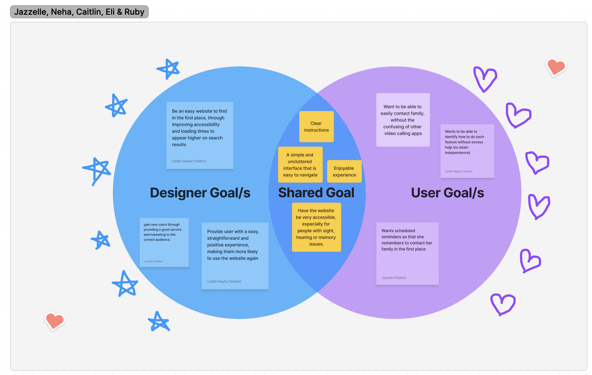
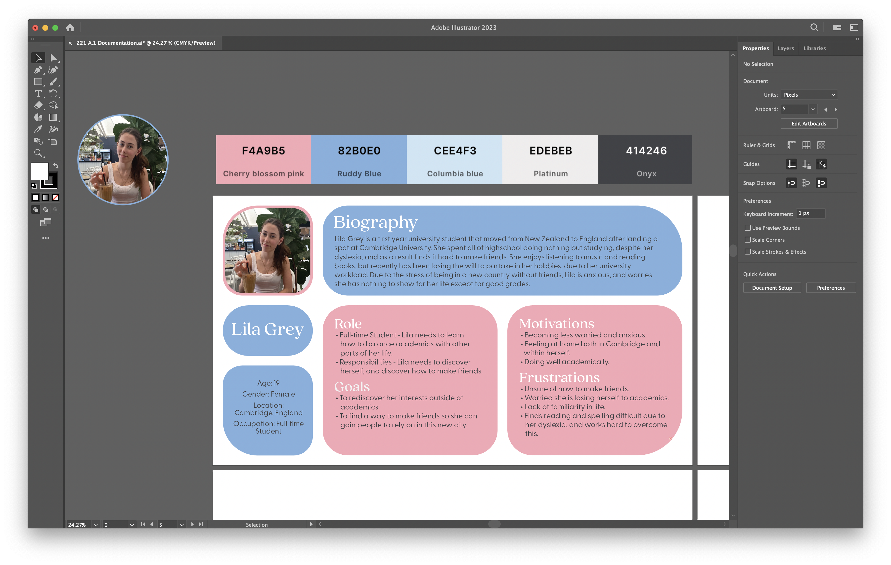
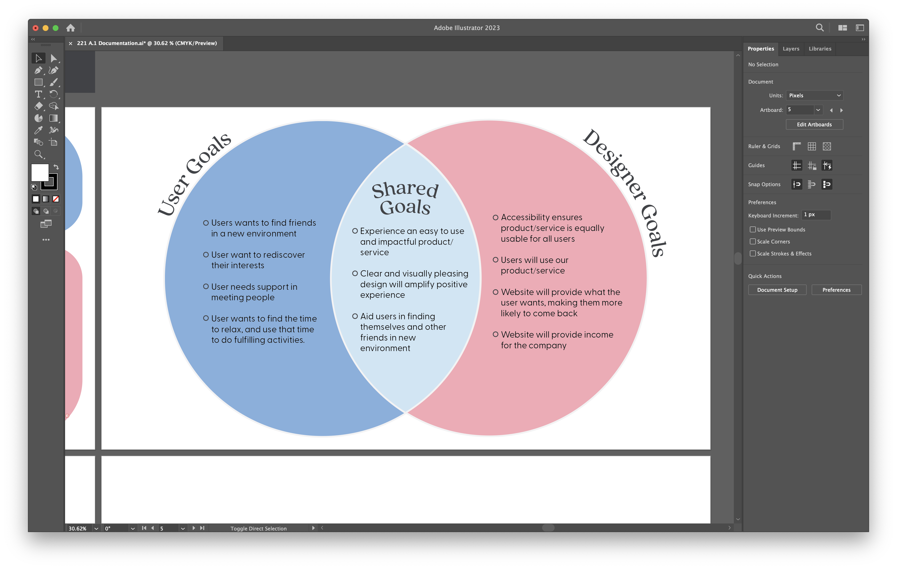

Week 3 Blog: Venn Diagrams
Lecture
We started the week by continuing to discuss the history of the Internet. I’m finding it really interesting, I thought Wikipedia would have been founded earlier than that! The million-dollar homepage was pretty funny, I’d never heard about it before. Skeuomorphism was so nostalgic, it reminded me of using my first-generation iPod Touch when I was around 6. Discussed how to effectively set goals for ourselves as designers.
Workshop and Assignment
We did an exercise on making Venn diagrams. Much like last week’s exercise we worked in a group and received feedback from the tutors. I started Assignment One after this and made the persona and Venn diagram in Adobe Illustrator, applying the feedback I got in the workshops. I decided that I wanted to create a social media platform that focuses on making connections with people based on shared interests. This platform would give users media/interest recommendations and help connect them to potential new friends.
Coding Lecture
Also had the first coding lecture going over lists and image links. I have coding experience so I was already familiar with the lecture content, but it was demonstrated well and helped refresh my memory.